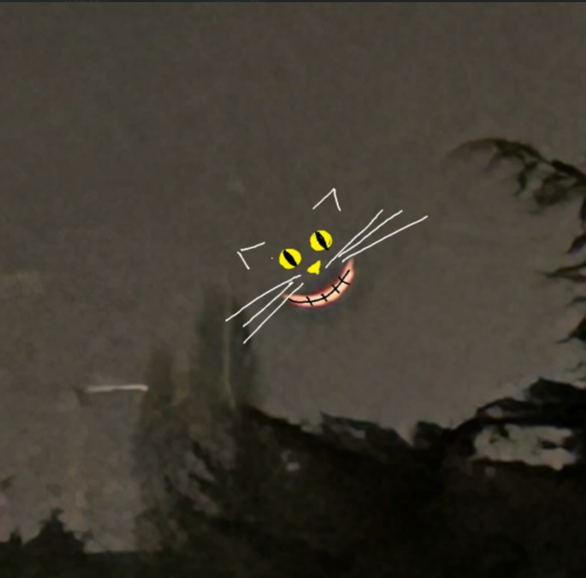
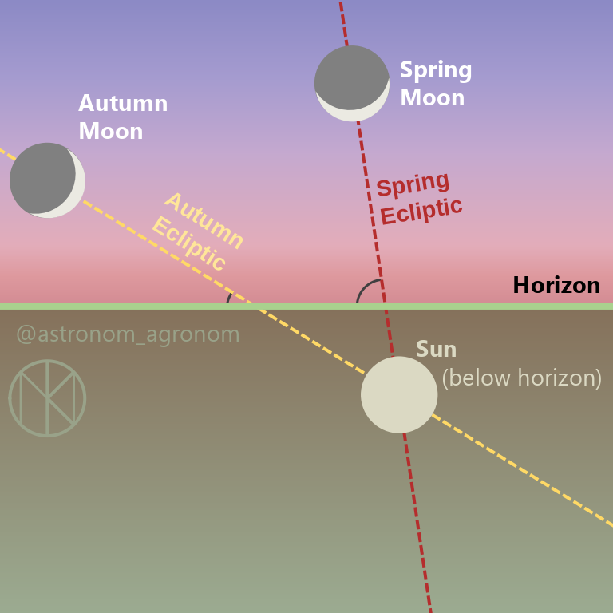
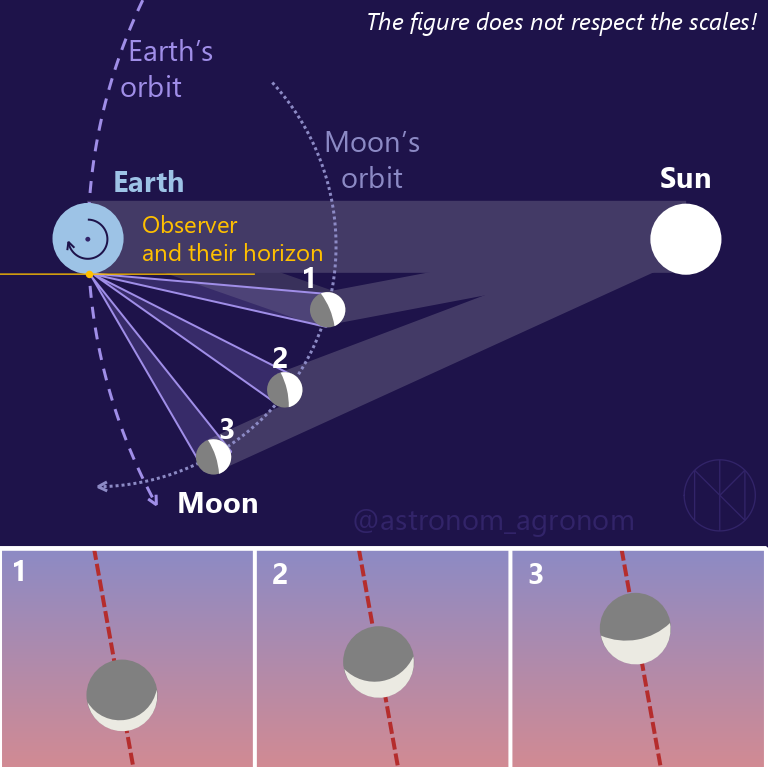
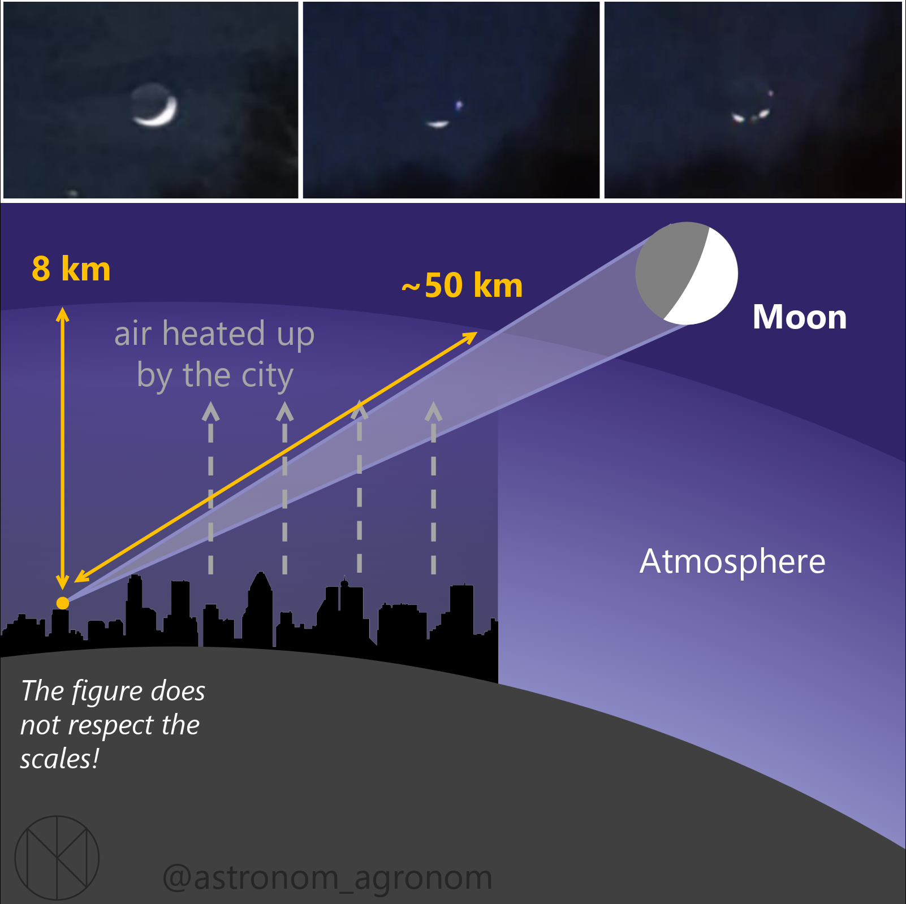
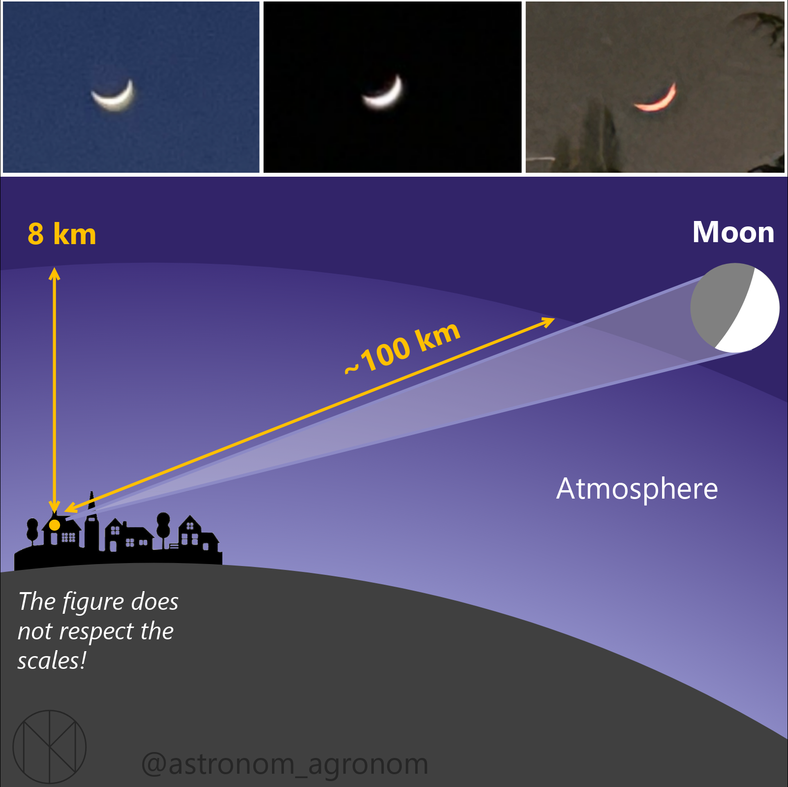

Cheshire Moon
28 March 2026
The Moon broke.
Last Saturday I got messages from Moscow: along with mobile internet, apparently the Moon also stopped working.
{kind=link}

- it was almost “lying” on the sky
- the dark side of the Moon was faintly visible
- parts of the crescent seemed to disappear for a few seconds
- near the horizon it turned from white to orange-red
Lying moon
A “lying” Moon is called wet Moon — as if it could hold water.
This orientation is purely geometry.
The Moon and the Sun move roughly along the same line in the sky — the ecliptic. In spring (at mid-northern
latitudes), this line meets the horizon at a steep angle. So when the Sun sets, it illuminates the Moon from below ⇒ the crescent appears horizontal.
{kind=link}

Why do we see the full disk?
Because Earth reflects sunlight. That faint glow on the dark side is earthshine.
{kind=link}

Flickering crescent
Some people reported a “flickering” crescent. A plausible explanation: atmospheric turbulence.
A large city is a strong heat source:- warm air from buildings
- exhaust from cars
- temperature gradients
The refractive index of air depends on temperature ⇒ light bends irregularly. If the Moon is low, its light crosses kilometers of this turbulent air.
{kind=link}

Red Moon
The reddening near the horizon is standard physics.
{kind=link}

Due to Rayleigh scattering, blue light is scattered much more efficiently than red.
Looking straight up → ~10 km of atmosphere. Looking toward the horizon → >100 km
Blue light gets scattered away. Red survives. ⇒ The Moon turns orange or red.